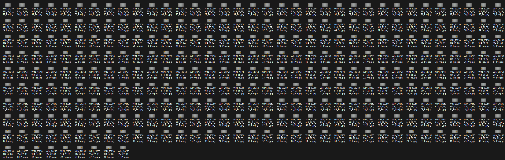

This week, I wanted to further my LEGO recognition. Previously, I used Python to access the camera and
read the colour of a specific pixel. However, this approach had multiple problems, including inaccuracy.
It meant that the brick had to be perfectly under that camera in a certain position it could only do one
brick at a time and colour and with talking to some of my pears with my project one of the chucked out
the idea with when sorting out lego its better to sort out the types of bricks over the colour so this
encouraged me to train a ai to be able to detect what type of brick is in front of the camera. Doing so
is a big task, especially since I have no experience with artificial intelligence and computer vision.
Instead of trying to complete it all in one week, I decided to break it down. This week, I gathered all
the training photos.
The websites i looked at this week to learn a bit about VGG16 Link1
&
Link2.
I set up my webcam, the one I will likely use for the actual event, on a tripod and positioned it
directly above a white piece of paper. The camera has a light on it, which is very helpful because it
eliminates most shadows. Shadows can be problematic when it comes to detecting shapes. I ended up with
325 photos of three different bricks, all shot from various angles and positions. I wanted to ensure the
system could recognise each brick, regardless of its placement, so I took pictures from every angle and
rotation, and even moved the bricks around in front of the camera. Moving the bricks around the camera
was important because the side of the bricks can be more or less visible depending on how they're
positioned. I also ensured the background was plain to prevent interference during training.

The original idea was to take photos of various colours. However, after discovering that I would take
around 100 photos per brick, I decided to use these photos as a preliminary draft. This way, I can learn
how to improve them and what adjustments to make as I continue to work with computer vision and
algorithms.
I plan to put all these photos into a pre-built algorithm, but before I take any pictures, I want to
understand what characteristics make images suitable for training. To do so, I examined various
algorithms. I came across VGG16, a neural network that analyses images through layers to detect
features, starting from simple patterns like edges and progressing to more complex shapes, ultimately
classifying the image. In robotics, VGG126 can help a robot recognise and identify objects from its
camera feed.
What am I going to do next week?
Next week, I plan to utilise this training data to train the model. I've been checking out different
options and decided to go with VGG after reviewing it this week. It'll do a good job for what I need,
and I'm excited to see how well it learns from the data.
What is something I've found that could become a future problem?
After chatting with one of my friends, he pointed out that having the camera right above the brick makes
it tough to figure out its height. This isn't a big deal for the blocks I'm currently training the
algorithm on, but if I want to branch out to different types of blocks, I'll need to change things up.
The easiest fix would be to angle the camera like one of the images I showed earlier, but I'm not sure
if that would make it harder to recognise the blocks overall.
What did I do best this week?
I accomplished something I'm quite proud of by breaking down a big task into smaller, bite-sized pieces.
Instead of feeling overwhelmed by the whole workload, I was able to dive into it one step at a time.
This way, I made solid progress and didn't get bogged down by the stress of what was ahead. It's a great
feeling to see how these little wins are helping me move forward and making the big project feel way
more doable.